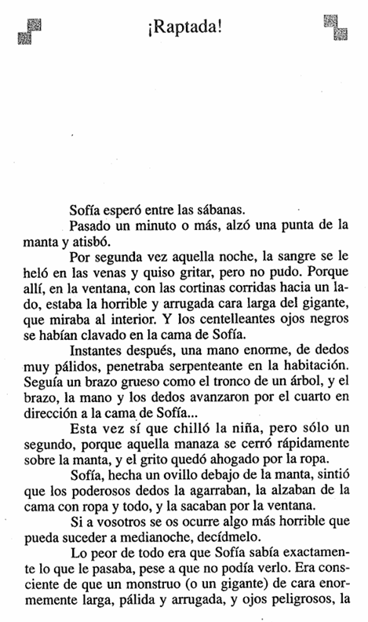
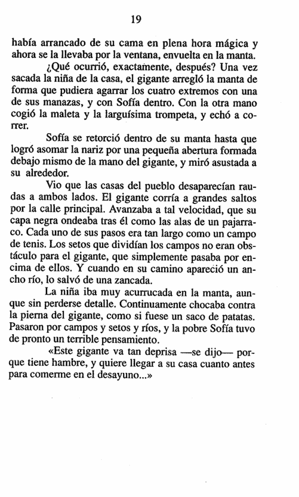

"¡Raptada!" — Capítulo 3 (Sofía es raptada por el gigante)
📖 Instrucciones: Lee con atención el fragmento antes de responder. Haz clic en la alternativa que consideres correcta: se marcará en verde si acertaste o en rojo si fallaste (y se mostrará cuál era la correcta).
📄 Páginas del texto

📷 Aquí va la imagen de la página 18 (reemplaza "pagina1.png" por tu archivo)
Página 18

📷 Aquí va la imagen de la página 19 (reemplaza "pagina2.png" por tu archivo)
Página 19
🔍 Comprensión y Análisis
Pregunta 11Comprensión literal
Cuando Sofía alza una punta de la manta y atisba, ¿qué es lo que ve en la ventana?
A) La luna llena brillando entre las cortinas.
B) A las demás niñas del internado espiándola.
C) La horrible y arrugada cara larga del gigante, con sus ojos negros clavados en su cama.
D) Una sombra que resultó ser solo el árbol del jardín.
Alternativa C. Al asomarse, Sofía ve en la ventana, con las cortinas corridas hacia un lado, la cara larga y arrugada del gigante, cuyos centelleantes ojos negros estaban fijos en su cama.
Pregunta 12Comprensión literal
La niña sí llegó a chillar, pero solo durante un segundo. ¿Por qué su grito quedó ahogado?
A) Porque la manaza del gigante se cerró rápidamente sobre la manta y la ropa ahogó el grito.
B) Porque se quedó sin voz a causa del miedo.
C) Porque una de sus compañeras le tapó la boca.
D) Porque decidió callarse para no ser descubierta.
Alternativa A. En cuanto Sofía chilló, la enorme mano del gigante se cerró de golpe sobre la manta, y el grito quedó ahogado por la ropa que la cubría.
Pregunta 13Comprensión literal
Una vez que sacó a la niña de la casa, ¿cómo se las arregló el gigante para llevarse a Sofía y sus cosas a la vez?
A) Metió a Sofía dentro de la maleta y cargó la trompeta al hombro.
B) Agarró con una mano los cuatro extremos de la manta con Sofía dentro, y con la otra cogió la maleta y la trompeta.
C) Dejó la maleta abandonada en la calle para poder correr más rápido.
D) Llamó a otro gigante para que lo ayudara a cargarlo todo.
Alternativa B. El gigante arregló la manta para sujetar sus cuatro extremos con una sola mano, con Sofía dentro, y con la otra mano tomó la maleta y la larguísima trompeta antes de echar a correr.
Pregunta 14Análisis narrativo
El texto describe la velocidad del gigante diciendo que "cada uno de sus pasos era tan largo como un campo de tenis" y que salvó un ancho río "de una zancada". ¿Qué busca lograr el autor con estas comparaciones?
A) Demostrar que el gigante estaba cansado y avanzaba con dificultad.
B) Confundir al lector sobre el lugar donde ocurre la historia.
C) Exagerar el tamaño y la rapidez del gigante para que el lector imagine lo enorme y veloz que era.
D) Indicar que el gigante en realidad se movía muy lentamente.
Alternativa C. Al comparar los pasos con un campo de tenis y describir cómo cruza un río de una sola zancada, el autor usa la exageración para que el lector perciba el tamaño descomunal y la enorme velocidad del gigante.
Pregunta 15Inferencia
Al final del fragmento, Sofía piensa: «Este gigante va tan deprisa porque tiene hambre, y quiere llegar a su casa cuanto antes para comerme en el desayuno...». ¿Qué se puede inferir sobre el estado de ánimo de Sofía en ese momento?
A) Está aterrorizada y teme que el gigante quiera devorarla.
B) Se siente tranquila y confía en que el gigante la cuidará.
C) Está emocionada por la aventura de viajar tan rápido.
D) Se encuentra aburrida dentro de la manta.
Alternativa A. El "terrible pensamiento" de Sofía revela su pánico: cree que la prisa del gigante se debe al hambre y que planea comérsela, lo que muestra lo asustada e indefensa que se siente.
📚 Vocabulario en contexto
Vocabulario 1
El texto dice que Sofía alzó una punta de la manta y "atisbó". ¿Qué significa este verbo?
A) Gritar con todas sus fuerzas.
B) Mirar con cuidado y disimulo, tratando de ver algo.
C) Quedarse profundamente dormida.
D) Esconderse debajo de las sábanas.
Alternativa B. "Atisbar" significa mirar con atención y de forma disimulada, tratando de observar algo sin ser descubierto, tal como hace Sofía al asomarse por debajo de la manta.
Vocabulario 2
El relato dice que la mano del gigante era una "manaza" que se cerró sobre la manta. ¿Qué expresa esa palabra?
A) Una mano muy pequeña y delicada.
B) Una mano herida o lastimada.
C) Una mano muy grande; la terminación "-aza" aumenta el tamaño de la palabra.
D) Una mano sucia y llena de barro.
Alternativa C. "Manaza" es un aumentativo de "mano": la terminación "-aza" indica que es una mano enorme, lo que refuerza el tamaño descomunal del gigante.
Vocabulario 3
El texto dice que Sofía estaba "hecha un ovillo" debajo de la manta. ¿Qué quiere decir esa expresión?
A) Encogida sobre sí misma, apretada como una bola.
B) Estirada y completamente relajada.
C) Saltando de un lado a otro.
D) De pie junto a la ventana.
Alternativa A. Un "ovillo" es una bola de hilo enrollado; "hecha un ovillo" significa que Sofía estaba encogida y apretada sobre sí misma, acurrucada por el miedo.
Vocabulario 4
El gigante cruzó un ancho río "de una zancada". ¿Qué es una "zancada"?
A) Un salto hacia arriba con los dos pies juntos.
B) Un paso muy largo, dado al andar o correr.
C) Una caída al suelo.
D) Un descanso breve antes de seguir corriendo.
Alternativa B. Una "zancada" es un paso muy largo; que el gigante cruzara un ancho río de una sola zancada muestra la enorme longitud de sus piernas.
✍️ Preguntas de Interpretación y Reflexión
Al imprimir o exportar a PDF, solo se incluirá esta sección y las líneas quedarán en blanco.
Nombre:
Fecha:
Pregunta 5Interpretación y pensamiento crítico
El texto dice que "lo peor de todo era que Sofía sabía exactamente lo que le pasaba, pese a que no podía
verlo". Aunque estaba atrapada dentro de la manta, era consciente de que un monstruo o gigante la había
arrancado de su cama. ¿Por qué crees que para Sofía era aún más angustiante saber lo que ocurría sin
poder verlo? Explica tu respuesta apoyándote en algún detalle del texto.
Creo que era más angustiante porque su imaginación
llenaba de miedo lo que no veía, y encerrada en la
manta se sentía indefensa y sin poder escapar.
⚠️ El texto azul de arriba es solo un ejemplo de cómo se ve una respuesta completa. Tu respuesta
NO puede ser igual ni copiar esas frases: debes escribirla con tus propias palabras.
Pregunta 6Interpretación y pensamiento crítico
Sofía se retorció dentro de la manta hasta lograr asomar la nariz por una pequeña abertura y mirar a su
alrededor, aun a costa de ver cosas que la asustaban. Si tú hubieras estado en su lugar, envuelto en la
manta mientras el gigante corría a toda velocidad, ¿habrías intentado asomarte a mirar como ella o
habrías preferido quedarte escondido? Fundamenta tu respuesta usando algún detalle de la escena.
Yo también habría intentado asomarme, porque saber
hacia dónde me llevaban me daría más pistas para
reaccionar, aunque lo que viera me diera mucho miedo.
⚠️ El texto azul de arriba es solo un ejemplo de cómo se ve una respuesta completa. Tu respuesta
NO puede ser igual ni copiar esas frases: debes escribirla con tus propias palabras.